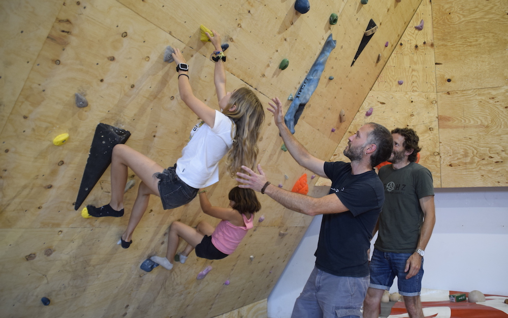

KATUXULO


Eskalada zale talde bat elkartu gara, eta pasio hau partekatzeko espazio bat sortzea erabaki dugu: herriko lehen rokodromo komunitarioa! Gure helburua ez da bakarrik eskaladaren praktikak eskaintzea; baizik eta inguruko lagun, familia eta eskalada zale guztientzako topagune bihurtzea, non, esperientzia partekatuz, gure buruak gainditzeko eta gorputza indartzeko aukera izango dugun. Eskalada hastapenetatik maila aurreratuetarako horma desberdinak prestatu ditugu eskalada saio libreez gain.